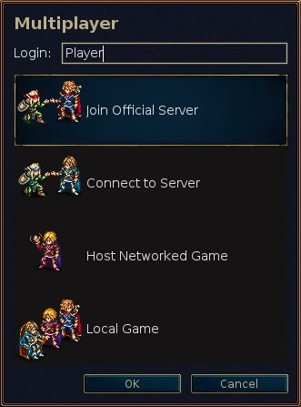

Sadržaj
Spisak tabela
„Boj za Vesnot“ je strateška igra na poteze u fantazijskom miljeu.
Sastavite vrsnu vojsku, postepeno uvježbavajući sirove regrute do prekaljenih veterana. U kasnijim partijama, sazovite svoje najžilavije ratnike i obrazujte navalu kojoj se niko ne može suprotstaviti! Birajte jedinice iz velikog skupa specijalizovanih, svojeručno podižući silu koja je sposobna za borbu po svakakvom terenu i protiv raznolikih protivnika.
Vesnot nudi mnoge priče koje čekaju da budu odigrane. Možete se boriti protiv orkova, nemrtvih i razbojnika po močvarama Vesnotskog kraljevstva; boriti pokraj zmajeva u surim visovima, vilenjaka u zelenim gajevima Etenvuda, patuljaka u velikim dvoranama Knalge, pa čak i morejaca u Bisernom zalivu. Možete krenuti u pohod da povratite prijesto Vesnota, upregnuti svoju strašnu moć nad nemrtvima da ovladate zemljama smrtnikâ̂, ili povesti slavno orkovsko pleme u pobjedu protiv ljudi što se usudiše da okaljaju vaše zemlje.
Na raspolaganju vam stoji preko dvije stotine tipova jedinica (pješadija, konjica, strijelci, magovi koliko za početak) i borbena dejstva od lokalnih zasjeda do sudara nepreglednih vojski. Takođe možete izazivati svoje prijatelje — ili neznance — i učestvovati u epskim višeigračkim fantazijskim bojevima.
Boj za Vesnot je softver otvorenog koda, na čijem stalnom poboljšanju radi živahna zajednica volontera. Možete stvarati posebne jedinice, pisati scenarije, pa čak i skriptovati sveobuhvatne pohode. Sadržaj koji održavaju korisnici dostupan je sa servera dodataka, odakle se najbolje probira i uvrštava u zvanična izdanja igre.
Znani predjeli Velikog kontinenta, na kojem se nalazi Vesnot, podijeljeni su u tri oblasti: Sjeverozemlje, gdje je uglavnom bezakonje; Vesnotsko kraljevstvo i njegova povremena kneževina Elensefar; i zabran jugozapadnih vilenjaka u Etenvudu i dalje.
Vesnotsko kraljevstvo leži u središtu ovog područja. Granice su mu Velika rijeka na sjeveru, Dulatijsko pobrđe na istoku i jugu, rubovi Etenvuda na jugozapadu, i okean na zapadu. Elensefar, negdašnja pokrajina Vesnota, ograničena je Velikom rekom na sjeveru, slabo utvrđenom linijom sa Vesnotom na istoku, Bisernim zalivom na jugu, i okeanom na zapadu.
Sjeverozemlje je divlje podneblje sjeverno od Velike rijeke. Ovu oblast nastanjuju skupine orkova, patuljaka, varvara i vilenjaka. Na sjeveru i istoku prostire se Lintanirska šuma, u kojoj se veliko kraljevstvo sjevernih vilenjaka drži svojih tajnovitih poslovanja.
Preko zemalja razasuta su sela u kojima možete liječiti svoje snage i sakupljati prihode za izdržavanje vojske. Moraćete da prelazite planine i rijeke, probijate se kroz šume, brda i tundru, i marširate otvorenim ravnicama. U svakoj od ovih oblasti žive stvorenja dobro prilagođena za nju, koja se mogu brže kretati i bolje boriti na tom poznatom terenu.
U svijetu Vesnota obitavaju ljudi, vilenjaci, patuljci, orkovi, zmagovi, saurijanci, morejci, nagajci i mnoge druge rase još tajnovitije i čudesnije. Prokletim zemljama hode nemrtvi i duhovi i sablasti; čudovišta vrebaju u tamošnjim ruševinama i tamnicama. Svako je prilagođen određenom terenu. Ljudi naseljavaju uglavnom umjerene ravnice. Brda, planine i podzemne pećine zabran su orkova i patuljaka. U šumama caruju vilenjaci. Morima i rijekama vladaju morejci i nagajci.
U svrhe igre, rase se dijele u frakcije; na primjer, orkovi često sarađuju s trolovima, a vilenjaci i patuljci s ljudima. Neke druge frakcije održavaju podjele u ljudskom društvu, npr. lojalisti protiv odmetnika. U većini pohoda, upravljaćete jedinicama iz okvira jedne frakcije. Kako se frakcije ponekad međusobno udružuju, u nekim scenarijima možete biti suočeni s više njih.
Kada prvi put pokrenete Vesnot, vidjećete početnu pozadinu i stubac dugmadi, što se naziva glavnim menijem. Dugmad se aktiviraju samo mišem. Ako ste nestrpljivi, preporučujemo: kliknite na dugme da izaberete jezik; zatim na da prođete kroz podučavanje; potom odigrajte pohod „Priča o dva brata“, klikom na dugme i izborom iz datog spiska.

- Na jednoj pravoj, premda prostoj, partiji bićete podučeni nekim od osnovnih kontrola potrebnih za igranje igre. Ovdje nisu važni pobjeda ili poraz, već naučiti kako se upravlja. Kliknite na dugme da zaigrate. Bićete u ulozi princa Konrada ili princeze Lizáre, i učiti od starog maga Delfadora — posvetite mu pažnju, inače bi vas mogao pretvoriti u daždevnjaka.
- Vesnot je prije svega dizajniran za igranje pohodâ̂. Pohodi su nizovi povezanih scenarija. Kliknite na ovo dugme da krenete u novi pohod. Vidjećete spisak pohoda koji su vam dostupni (ako želite možete preuzeti još). Odaberite pohod i kliknite na da počnete ili da napustite spisak. Svaki pohod ima nekoliko nivoa težine: lako, srednje (normalno) i teško. Preporučujemo srednji nivo, pošto je izazovan, ali ne i težak. Tokom pohoda ne možete mijenjati nivo težine. Ako imate ozbiljnih teškoća pri savlađivanju lakog nivoa, svakako će vam pomoći uvod u osnovnu strategiju. Kada odaberete nivo težine započećete prvi scenario pohoda.
- Kliknite na ovo dugme da odigrate pojedinačni scenario protiv jednog ili više protivnika. Možete igrati partije preko Interneta, ili na svom računaru protiv računara ili ljudskih protivnika. Ovo dugme poziva dijalog iz kojeg možete izabrati način igranja scenarija. Za više detalja, pogledajte o scenarijima.
- Kliknite na ovo dugme da učitate prethodno sačuvanu poziciju. Pojaviće se dijalog sa spiskom pozicija. Izaberite jednu i kliknite na da je učitate i nastavite, ili na da se vratite u glavni meni. Ako izaberete snimak partije, možete popuniti kućicu Snimak; učitavanjem ćete moći da gledate odigravanje svih poteza od početka partije.
- Kliknite na ovo dugme da pristupite serveru sadržajâ̂, gdje se nalazi mnoštvo korisničkih tvorevina. Između ostalog, tu spadaju pohodi, višeigračke epohe (definicije frakcija za višeigračke partije) i višeigračke mape. Dugmetom možete naknadno ukloniti sadržaj koji više ne želite.
- Klikom ovdje pokrećete uređivač mapa, kojim možete stvarati posebne mape za višeigračke partije ili za sopstvene pohode.
- Kliknite na ovo dugme, izaberite jezik, pa kliknite na da ga aktivirate. Klikom na ostavljate tekući jezik. Pri prvom pokretanju Vesnota podrazumijevan je jezik prema sistemskom lokalitetu (ako se može odrediti) ili engleski; pošto izričito izaberete jezik, biće korišćen pri svakom narednom pokretanju.
- Kliknite ovdje da promijenite podrazumijevane postavke.
-
Klik na ovo dugme daje spisak glavnih doprinosilaca Vesnota. S mnogima od
njih možete popričati u stvarnom vremenu na
irc.freenode.org:6667,#wesnoth. - Kliknite ovdje da napustite Vesnot.
- Klikom na ovo dugme otvarate sistem pomoći uklopljen u igru. Pružiće vam podatke o jedinicama i svim drugim važnim činiocima izvođenja igre. (Većinu njih opisuje i ovaj priručnik.)
- Kliknite ovdje da pročitate sljedeći kratki savet iz „Knjige Vesnota“.
- Kliknite ovdje da pročitate prethodni kratki savjet iz „Knjige Vesnota“.
Boj za Vesnot se može igrati na dva osnovna načina:
- Igranje niza povezanih scenarija, što se naziva pohodom, protiv računara.
- Igranje jednog scenarija protiv računarskih ili ljudskih protivnika.
Pohodi su nizovi bitaka povezanih tokom priče. Uobičajeni pohodi sadrže 10–20 scenarija. Glavnu prednost pohodâ̂ čini to što vam omogućavaju da razvijate svoju vojsku. Po završetku svakog scenarija preostale jedinice bivaju sačuvane, tako da ih možete koristiti u narednom scenariju. Ako neku jedinicu ne želite da upotrijebite tokom datog scenarija, ona se prenosi na sljedeći, tako da ne gubite jedinice koje ne koristite.
Vesnot je prije svega zamišljen za igranje pohoda, zbog čega je ovaj način igranja najzanimljiviji novim igračima, i preporučeni način za učenje igre.
Za završetak jednog scenarija potrebno je od oko trideset minuta do dva sata. Ovo je zato najbrži način igranja, ali se vaše jedinice na upisuju i ne možete koristiti jedinice iz pohoda. Scenarije možete igrati protiv računara ili protiv drugih igrača, preko Interneta ili na svom računaru. Scenarijima se pristupa dugmetom u glavnom meniju.
Višeigračke partije obično se igraju protiv drugih igrača preko Interneta (možete ih igrati i u LAN-u, ako ga imate). Višeigračka partija traje između jednog i deset sati, u zavisnosti od broja igrača i veličine mape. Moguće je da neke partije traju i jednu ili dve sedmice, iako je stvarno vrijeme igranja samo nekoliko sati. U višeigranju ne možete prenositi jedinice iz jednog scenarija u drugi, odnosno svoju vojnu silu možete graditi samo u okviru datog scenarija.
Pošto kliknete na dugme , pruža vam se nekoliko opcija:

Ovdje unosite svoje ime na višeigračkom serveru. Ako imate nalog na forumu Vesnota, možete upotrijebiti isto korisničko ime i lozinku za pridruživanje zvaničnom serveru. Ako zadato korisničko ime traži lozinku, iskočiće dijalog za njen unos. Bez lozinke ne možete upotrijebiti registrovano ime.
Ova vas opcija neposredno povezuje sa zvaničnim serverom. Naći ćete se u holu u kojem možete stvarati partije po volji, gdje su mnoge partije već otvorene, i gdje neki igrači čekaju da se pridruže novom meču.
Ova opcija otvara novi dijalog u kojem unosite adresu računara za pridruživanje. Tu je i dugme , koje nabraja rezervne zvanične servere u slučaju da glavni trenutno nije dostupan.
Potpuni spisak zvaničnih i korisničkih servera dat je na veb stranici višeigračkih servera.
Kroz ovu opciju menija takođe možete doći do serverâ̂ koje udomljavaju drugi
igrači. Tako, ako je pokrenut server u lokalnoj mreži, unesite adresu i broj
porta (podrazumijevan: 15000). Na primjer, ako želite da se povežete na
server u pogonu na računaru sa adresom 192.168.0.10 i podrazumijevanim
portom, u dijalogu biste unijeli 192.168.0.10:15000.
Da biste mogli da započnete višeigračku partiju bez oslanjanja na spoljašnji server, morate sami pokrenuti server, naredbom wesnothd. Kad izaberete ovu opciju, ova naredba se automatski izvršava u pozadini; server će biti napušten kada ga svi igrači napuste. Da bi se drugi igrači uključili u partiju na vašem serveru, moraju moći da se povežu na TCP port 15000. Ako ste iza zaštitnog zida, vjerovatno morate izmijeniti njegove postavke tako da dozvoljava dolazne veze na portu 15000 i da prosljeđuje taj saobraćaj na računar koji udomljava server. Ne bi trebalo da morate menjati postavke zaštitnog zida samo da biste se pridružili partijama na zvaničnom ili nekom drugom serveru.
Ovo stvara partiju koja se izvršava na vašem računaru. Možete je igrati usijano, gdje se igrači smjenjuju po potezima na „usijanom sjedištu“ na istom računaru. Za igranje usijane partije potrebno je otprilike isto vrijeme kao i kad se igra preko Interneta. Drugačije, partiju možete prosto odigrati protiv VI umjesto ljudskih protivnika. Ovo može biti dobar način za upoznavanje sa različitim mapama koje se koriste u višeigračkim partijama, prije nego što zaigrate protiv stvarnih protivnika. Takođe može poslužiti kao jednostavan način za ispitivanje sposobnosti jedinica iz različitih frakcija, tako što izaberete frakciju koju u partiji vi vodite i koje vode protivnici. Naravno, možete pomiješati oba ova načina igranja u istoj partiji — zaigrati s prijateljem protiv VI protivnika.

Bez obzira na to da li igrate jedan scenario ili pohod, osnovni raspored ekrana u igri ostaje isti. Glavninu ekrana zauzima mapa koja prikazuje sva dejstva do kojih dolazi tokom igranja. Oko mape stoje različiti elementi koji pružaju korisne informacije o igri i detaljnije su opisani u narednom.

Duž vrha ekrana, slijeva nadesno, date su sljedeće stavke:
- dugme
- dugme
- brojač poteza (tekući prema najvećem broju poteza)
- vaše zlato
- sela (vaša sela prema ukupnom broju sela)
- broj vaših jedinica
- vaši izdaci
- vaši prihodi
- tekuće ili preostalo vrijeme (u višeigračkim partijama na vreme)

Duž desne ivice ekrana, odozgo nadolje, stoje:
- cijela mapa, u razmjeri
- Current hex position (x-coordinate, y-coordinate), defense and movement of the currently selected unit on the marked hex
- tip tekućeg polja
- pokazatelj doba dana
- profil posljednje izabrane jedinice
- dugme
Kad prvi put započnete scenario ili pohod, imaćete samo nekoliko jedinica na mapi. Jedna od njih biće vaš zapovjednik (obilježen malom ikonom zlatne krune). Zapovjednik se obično postavlja u zamak, na posebno polje po imenu kula. Kad god vam je zapovjednik na kuli (ne samo vašoj, već i kulama neprijateljskih zamkova koje osvojite) i imate dovoljno novca, možete unajmiti nove jedinice za svoju vojsku. U kasnijim scenarijima možete sazivati iskusne jedinice koje su preživjele ranije scenarije. Odavdje možete započeti sa izgradnjom vojske za pokoravanje neprijatelja.
Vjerovatno je prvo što ćete poželeti da unajmite svoju prvu jedinicu. Pritisnite Ctrl+R (ili desno kliknite na prazno polje zamka i izaberite ) i dobićete mogućnost da unajmite jedinicu sa spiska svih dostupnih vam. Unajmljena jedinica smiješta se na prazno polje zamka. Pošto ispunite zamak, ne možete više unajmljivati dok ne pomjerite neke jedinice. Protivnički zapovednik je slično smješten na kulu u svom zamku i počeće s unajmljivanjem svojih snaga — nemojte odugovlačiti s razgledanjem predjela, treba dobiti bitku.
Na kraju svakog uspješnog scenarija, sve vaše preostale snage bivaju automatski sačuvane. Na početku narednog scenarija ih možete sazvati, na način sličan unajmljivanju. Sazvane snage su obično iskusnije nego svježe, i zato bolji izbor.
Svaka jedinica određena je rasom, nivoom i klasom, i ima izvesne vrline i mane na osnovu svojih otpornosti, trenutnog terena i nivoa. O ovome detaljno piše pomoć u igri.
Kako jedinice gomilaju borbeno iskustvo, spoznavaće nove vještine i postajati jače. Takođe će stradavati u bitkama, zbog čega ćete morati da unajmljujete i sazivate nove. Ali mudro birajte, jer svaka ima vrline i mane koje će lukav protivnik brzo iskoristiti.
Obratite pažnju na iskačući dijalog sa ciljevima na početku svakog scenarija. Pobjedu obično ostvarujete eliminisanjem svih neprijateljskih vođa, a gubite ako vaš vođ strada. Neki scenariji pak mogu imati drugačije ciljeve — dovođenje vođa do određenog mjesta, spasavanje nekoga, rešavanje zagonetke, opiranje opsadi dok ne prođe određeni broj poteza.
Kada pobijedite u scenariju, mapa će se zasiviti i dugme pretvoriće se u . Tada možete promijeniti opcije upisivanja pozicije (ako ste u višeigračkoj partiji) ili proćaskati sa drugim igračima, prije nego što kliknite na ovo dugme za nastavak.
Vojska se ne bori besplatno — koštaće vas zlata da unajmljujete i izdržavate jedinice. Svaki scenario započinjete sa zlatom prenesenim iz prethodnih scenarija (mada vam se obezbjeđuje minimalna količina zlata na početku scenarija ako niste preneli dovoljno iz prethodnih). Još zlata možete prikupiti brzim izvršavanjem ciljeva scenarija, i, tokom scenarija, zaposijedanjem sela. Svako posjednuto selo daje prihod od dva zlatnika po potezu. Na samom početku scenarija obično vrijedi zauzeti što je više sela moguće, kako biste obezbijedili dovoljne prihode za vođenje rata. Trenutno zlato i prihode možete videti na vrhu ekrana, kao što je pomenuto u odijeljku o ekranu igre.
Na početku svakog scenarija upisuje se trenutno stanje igre. Ako budete poraženi, možete ga učitati i pokušati ponovo. Pošto uspijete, opet ćete biti pitani da sačuvate naredni scenario i zaigrate ga. Ako morate da napustite igranje tokom scenarija, možete sačuvati potez i učitati ga ponovo kasnije. Samo zapamtite: dobar igrač Boja za Vesnot nikada nema potrebu za upisivanjem tokom scenarija. Većina početnika, pak, ovo radi prilično često.
Ovo su podrazumevani kontrolni tasteri. Postava tastera može da se razlikuje u zavisnosti od platforme. Na primer, pod MacOS-om često ćete koristiti taster Cmd umesto Ctrl. Većinu prečica možete izmeniti po želji u meniju .
Tabela 2.1. Opšte kontrole i prečice
| F1 | Pomoć „Boja za Vesnot“. |
| tasteri strelica | Klizanje. |
| lijevi klik | Biranje i pokretanje jedinice. |
| desni klik | Kontekstni meni, otkazivanje radnje. |
| srednji klik | Centriranje na položaj pokazivača. |
| Escape | Napuštanje igre, napuštanje menija, otkazivanje poruke. |
| Ctrl+S | Upisivanje pozicije. |
| Ctrl+O | Učitavanje pozicije. |
| Ctrl+P | Odlazak u dijalog za podešavanje. |
| Ctrl+Q | Napuštanje igre. |
| Ctrl+F | Preko cijelog ekrana ili u prozoru. |
| Ctrl+Alt+M | Utišavanje zvuka u igri. |
| + | Uveličanje. |
| - | Umanjenje. |
| 0 | Podrazumijevano uveličanje. |
| Ctrl+E | Prikaz elipsa. |
| Ctrl+G | Prikaz mreže. |
| Ctrl+A | Ubrzani režim igre. |
| držanje Shift | Prebacivanje između ubrzanog i običnog režima igre dok je pritisnuto (privremeno!) |
| Ctrl+J | Ciljevi scenarija. |
| S | Statistika. |
| Alt+S | Tabela stanja. |
| Alt+U | Spisak jedinica. |
| L | Skok na jedinicu vođa. |
| Shift+S | Ručno ažuriranje pokrova. |
Tabela 2.2. Prečice za jedinice i potez
| Ctrl+R | Unajmljivanje jedinice. |
| Ctrl+Alt+R | Ponavljanje posljednjeg unajmljivanja. |
| Alt+R | Sazivanje jedinice. |
| Ctrl+N | Preimenovanje jedinice. |
| D | Prikaz opisa trenutno izabrane jedinice. |
| T | Nastavak prekinutog pokreta jedinice. |
| U | Opozivanje posljednjeg pokreta (moguće samo za determinističke pokrete). |
| R | Ponavljanje pokreta. |
| N | Kruženje kroz jedinice koje još mogu da se pokrenu. |
| Shift+N | Kruženje kroz jedinice koje još mogu da se pokrenu, obrnuto. |
| Ctrl+V | Mogući pokreti neprijatelja (u sljedećem potezu). |
| Ctrl+B | Mogući pokreti neprijatelja kad vaših jedinica ne bi bilo na mapi. |
| 1 do 7 | Koliko daleko izabrana jedinica može da se pomjeri za ovoliko poteza. |
| Space | Kraj poteza jedinice i prelaz na sljedeću koja još može da se pokrene. |
| Shift+Space | Trenutno izabrana jedinica da drži položaj (kraj pokretanja). |
| Ctrl+Space | Kraj igračevog poteza. |
Tabela 2.3. Prečice za blokče
| p | Režim planiranja. |
| y | Izvršavanje planirane radnje. |
| h | Brisanje planirane radnje. |
| PageDown | Pomeranje radnje nadole u redu. |
| PageUp | Pomeranje radnje nagore u redu. |
| Ctrl+Y | Izvršavanje svih radnji. |
| i | Pretpostavljanje mrtvim. |
Tabela 2.4. Prečice za višeigranje
| M | Poruka drugom igraču (u višeigranju). |
| Ctrl+M | Poruka saveznicima (u višeigranju). |
| Alt+M | Poruka svima u igri (u višeigranju). |
| Alt+C | Dnevnik ćaskanja. |
| Ctrl+X | Čišćenje poruka. |
Tabela 2.5. Razne prečice
| Ctrl+C | Čišćenje ekranskih etiketa. |
| / | Traženje (etiketa ili jedinica po imenu). |
| Alt+L | Postavljanje tekstualne etikete na polje. |
| Ctrl+L | Timska etiketa. |
| ; | Komandni režim |
| F5 | Osvežavanje keša |
| Shift+C | Stvaranje jedinice (ispravljanje). |
| f | Izvršavanje VI formule. |
Neke prečice pod MacOS-om X traže više od zamene Ctrl sa Cmd. Sledi spisak takvih:
Tabela 2.6. Razne prečice
| Cmd+W | Napuštanje igre. |
| Cmd+, | Odlazak u dijalog za podešavanje. |
| Ctrl+F5 | Osvežavanje keša |
| Option+Space | Kraj igračevog poteza. |
Neke prečice su pomalo izmenjene da bi se lakše koristile kontrole koje pruža pandora. Ako koristite pandoru, sledeći tasteri su različiti u odnosu na gornji spisak:
Tabela 2.7. Kontrole i prečice na pandori
| D-Pad | Klizanje. |
| GamingButton A | Unajmljivanje jedinice. |
| GamingButton B | Opozivanje posljednjeg pokreta (moguće samo za determinističke pokrete). |
| GamingButton X | Kruženje kroz jedinice koje još mogu da se pokrenu. |
| GamingButton Y | Sazivanje jedinice. |
| Alt+GamingButton Y | Pomeranje radnje nadole u redu. |
| Alt+GamingButton X | Pomeranje radnje nagore u redu. |
Svaka strana dobija nešto zlata za početak, i po dva zlatnika na potez i još po dva za svako posjednuto selo. Tokom pohoda, početno zlato je najmanja količina definisana za trenutni scenario, koja je obično to manja što je nivo težine veći. U dodatak ovome, često vam se prenese određen procenat zlata iz prethodnog scenarija. Taj procenat zavisi od scenarija, i najčešće je pomenut u ciljevima scenarija.

Zlato najprije služi podizanju vojske unajmljivanjem novih jedinica i sazivanjem onih iz prethodnih scenarija u pohodu. Jedinice se mogu unajmiti ili sazvati kada zapovjednik stoji na kuli u zamku koji ima bar jedno prazno polje.
- Kliknite desnim na prazno polje zamka i izaberite da unajmite novu jedinicu sa spiska koji se pojavi. Trošak unajmljivanja zavisi od tipa jedinice, a obično je između 10 i 20 zlatnika.
- Kliknite desnim na prazno polje zamka i izaberite da pozovete jedinicu iz prethodnih scenarija. Sazivanje staje 20 zlatnika po jedinici. Pogledajte o sazivanju jedinica za više detalja.
Svaka jedinica traži određene izdatke. Izdaci su obično jednaki nivou jedinice, osim ako nema osobinu lojalnosti (v. ispod). Jedinice koje nisu unajmljene na početku — tj. zapovjednik i one koje se dobrovoljno pridruže — obično imaju ovu osobinu. Izdaci se naplaćuju samo ako su veći od broja sela koje data strana poseduje — trošak je jednak razlici između broja sela i ukupnih izdataka.
Boj za Vesnot pruža stotine tipova jedinica, određenih bogatim statističkim pregledom. Pojedine jedinice mogu imati i posebne osobine, koje ih ponešto izdvajaju od drugih istovrsnih jedinica. Napokon, dizajneri pohoda mogu dodavati jedinstvene jedinice u neke scenarije, kako bi još više proširili opcije dostupne igraču.
Osnovnu statistiku jedinice čini broj udarpoena (UP), poena pokretljivosti, oružja koja može da koristi i štetu koju nanose. Tu su zatim poredak i posebne mogućnosti, o čemu će biti reči u narednom.
Svaka jedinica pripada poretku: zakoniti, neutralni, haotični ili dvojstveni. Poredak utiče na učinak jedinice u različita doba dana. Na neutralne jedinice doba dana ne utiče. Zakonite jedinice nanose više štete danju a manje noću. Haotične jedinice nanose više štete noću a manje danju. Dvojstvene jedinice nanose manje štete i danju i noću.
„Dan“ i „noć“ podijeljeni su u po dvije smjene: jutro i popodne, i prva straža i druga straža. One se mogu vidjeti po položaju sunca i mjeseca na grafiku doba dana.
Naredna tabela prikazuje uticaj različitih doba dana na štetu koju nanose zakonite, haotične i dvojstvene jedinice:
Tabela 2.8. Doba dana i šteta
| potez | slika | smjena | zakonite | haotične | dvojstvene |
|---|---|---|---|---|---|
| 1 |

| zora | — | — | — |
| 2 |

| dan (jutro) | +25% | −25% | −25% |
| 3 |

| dan (popodne) | +25% | −25% | −25% |
| 4 |

| sumrak | — | — | — |
| 5 |

| noć (prva straža) | −25% | +25% | −25% |
| 6 | noć (druga straža) | −25% | +25% | −25% | |
| posebno |

| podzemlje | −25% | +25% | −25% |
Imajte na umu da se neki scenariji odvijaju u podzemlju, gdje je trajna noć!
Na primjer, razmotrimo borbu između zakonite i haotične jedinice koje obje nanose osnovnu štetu 12. U zoru i sumrak, obje će naneti 12 poena štete ako pogode. Tokom jutra i popodneva, zakonita jedinica će nanijeti 12 × 1,25 = 15 poena, dok će haotična naneti 12 × 0,75 = 9 poena. Tokom prve i druge straže biće obrnuto, zakonita jedinica nanijeće 9 poena prema 15 poena haotične.
Ako se slične neutralne jedinice upuste u borbu, nanosiće 12 poena štete bez obzira na doba dana.
Jedinice imaju osobine koje odražavaju crte njihovog karaktera. Osobine se nasumično dodjeljuju jedinici pri njenom stvaranju. Većina jedinica dobija dve osobine.
Moguće osobine za većinu jedinica jesu:
- oštroumnost
- Oštroumnim jedinicama treba 20% manje iskustva za napredovanje (trolovi ne mogu imati ovu osobinu). Oštroumne jedinice su vrlo korisne na početku pohoda, pošto brže mogu dostići više nivoe. Kasnije u toku pohoda oštroumnost nije tako korisna, pošto „napredovanje po najvećem nivou“ (NAPON) nije tako značajno kao napredovanje u nivou. Ako imate mnogo ovakvih jedinica najvišeg nivoa, možda je bolje da sazivate jedinice sa korisnijim osobinama.
- hitrost
- Hitre jedinice imaju poen više na pokretljivost, ali 5% manje UP. Hitrost je najuočljivija osobina, posebno kod sporijih jedinica kakve su trolovi i teška pješadija. Hitre jedinice često imaju značajno uvećanu pokretljivost na nezgodnom terenu, što može biti važno za razmatranje kada raspoređujete snage. Takođe, ove jedinice nisu tako robusne kao one bez hitrosti, i stoga su manje pogodne za držanje položajâ pod stalnim napadom.
- žilavost
- Žilave jedinice imaju četiri UP više, plus jedan na svaki nivo. Žilave jedinice mogu biti korisne u svim etapama pohoda, i ova osobina je korisna za sve tipove jedinica. Žilavost je često od najveće pomoći jedinicama koje imaju neki splet niskih udarpoena, dobre odbrane, ili visokih otpornosti. Ovakve jedinice su posebno korisne za držanje strateških položaja van ruku protivnika.
- kršnost
- Kršne jedinice nanose poen štete više za svaki uspješan udar u bliskoj borbi, i imaju jedan UP više. Iako korisna bilo kojoj jedinici koja se bori blisko, kršnost je najznačajnija jedinicama sa velikim brojem udara u napadu, kakvi su npr. vilin-borci. Kršne jedinice mogu biti vrlo korisne kada je samo još zrnce više štete potrebno da se oštećujući udar pretvori u završni.
Ima i osobina koje se dodjeljuju samo određenim jedinicama ili jedinicama određene rase. To su:
- spretnost
- Spretne jedinice nanose poen štete više pri svakom uspješnom udaru u odstupnoj borbi. Spretnost je osobina koju posjeduju samo vilenjaci. Vilenjački narod je poznat po svojoj tajanstvenoj skladnosti i velikoj vještini u rukovanju lukom. Neki od njih, međutim, obdareni su talentom koji nadmašuje njihove sunarodnike. Takvi vilenjaci nanose dodatan poen štete svakom svojom strijelom.
- neustrašivost
- Neustrašive jedinice ne trpe negativni napadni bonus u nepovoljno doba dana (teškohodi, nekrofazi, trolovi, bauljaši).
- zdravlje
- Čuveni po svojoj krepkosti, neki patuljci su izdržljiviji od drugih i mogu se liječiti odmaranjem čak i dok putuju ili se bore. Zdrave jedinice imaju jedan UP više, i još jedan po nivou, u zalječuju se dva UP svakog poteza bez obzira na okolnosti.
Neke osobine se ne dodjeljuju nasumično. Dodjeljuje ih ili dizajner scenarija ili se uvijek vezuju za tip jedinice:
- Aged
- The oldest units may have the Aged trait, receiving an 8 points HP decrease and having -1 movement and melee damage.
- Dim
- Units with the Dim trait require 20% more experience to advance.
- Elemental
- Elemental units aren’t alive and thus are immune to poison, and drain and plague don’t work on them. Elemental units generally have Elemental as their only trait.
- Feral
- Units with the Feral trait only receive 50% defense in villages regardless of the base terrain the village is on.
- odanost
- Odane jedinice ne prave izdatke. Većina jedinica ima izdatke na kraju svakog poteza, brojevno jednake njihovom nivou. Odane jedinice nemaju takvih zahtijeva. Tokom pohoda, određene jedinice mogu svojevoljno odlučiti da se pridruže vašim snagama. One će tada imati osobinu odanosti. Iako se mora platiti njihovo kasnije sazivanje, nikada ne prave izdatke u toku scenarija. Ovo ih može učiniti dragocjenim tokom dugog pohoda, kada je zlato stalno na izmaku. Unajmljene jedinice nikada nemaju ovu osobinu, tako da može biti nesmotreno otpuštati odane jedinice, ili ih slati u besmislenu smrt.
- mehaničnost
- Mechanical units aren’t alive and thus are immune to poison, and drain and plague don’t work on them. Mechanical units generally have Mechanical as their only trait.
- usporavanje
- Large, unwieldy units with the Slow trait have -1 movement and 5% more hitpoints.
- nemrtvost
- Nemrtve jedinice su imune na otrov, a ni crpljenje ni kuga nemaju uticaja na njih. Nemrtvost im je obično jedina osobina. Pošto su ove jedinice nastale od tijela mrtvih, povraćenih da se ponovo bore, otrov nema uticaja na njih. Ovo ih može učiniti izuzetno korisnim pri obračunavanju sa protivnicima koji svoje napade podržavaju otrovima.
- Weak
- Units may have the Weak trait, receiving a -1 increment in hitpoints and melee damage.
Neke jedinice imaju specijalne napade, nabrojane ispod:
- nož u leđa
- Upotrijebljen ofanzivno, ovaj napad nanosi dvostruku štetu ako prijateljska jedinica stoji sa naspramne strane napadnute, i pritom nije onesposobljena (npr. okamenjena).
- bezglavost
- Bilo da se upotrebljava u napadu ili odbrani, borba traje sve dok jedna upetljana jedinica ne nastrada, ili prođe 30 rundi napada.
- juriš
- Upotrijebljen ofanzivno, ovaj napad nanosi dvostruku štetu meti. Ali takođe dovodi do dvostrukog oštećenja ukoliko ciljana jedinica udari u protivnapadu.
- crpljenje
- Jedinica crpi zdravlje životnih jedinica, liječeći sebe u iznosu polovine štete koju nanese (zaokruženo nadolje).
- prvi udar
- Jedinica uvijek udara prva u borbi, čak i kada se brani.
- magičnost
- Napad uvijek ima 70% izgleda da pogodi, bez obzira na odbrambenu sposobnost napadnute jedinice.
- oštrookost
- Pri napadu, uvijek postoji barem 60% izgleda da dođe do pogotka.
- kuga
- Kada jedinica nastrada pod napadom kuge, biva zamijenjena bauljašem na strani one koja je bacila kugu. Ovo ne radi na nemrtvima ili jedinicama u selu.
- otrov
- Ovaj napad truje ciljanu jedinicu. Otrovane jedinice gube 8 UP po potezu, dok ne budu iscijeljene ili svedene na 1 UP. Otrov ne može sam po sebi dokrajčiti jedinicu.
- usporavanje
- Napad usporava ciljanu jedinicu dok ne završi potez. Šteta koju jedinica čini u napadu time biva prepolovljena, a trošak kretanja joj je udvostručen. Usporena jedinica nosiće ikonu puža u podacima sa strane kada se izabere.
- okamenjivanje
- Napad pretvara ciljanu jedinicu u kamen. Tada se ona ne može pokretati niti napadati.
- roj
- Broj udara pri napadu se smanjuje kako jedinica biva povređivana. Broj napada je srazmjeran odnosu trenutnih UP i najviše UP koje jedinica može imati. Na primjer, jedinica sa 3/4 punih UP imaće 3/4 udara pri napadu.
Neke jedinice su sposobne da ili neposredno utiču na druge jedinice, ili da utiču na to kako se druge jedinice međusobno odnose. Ovdje spadaju:
- zasjeda
- Jedinica se može skrivati u šumi, tako da je neprijatelji ne uoče. Protivničke jedinice ne mogu vidjeti niti napasti ovu jedinicu dok je u šumi, sve dok ne stupe do nje. Neprijateljska jedinica koja prva otkrije skrivenu, istog časa gubi svu preostalu pokretnost u potezu.
- skrivanje
- Jedinica se može skrivati u selima (s izuzetkom vodenih), tako da je neprijatelji ne vide osim kada stoje pokraj nje. Protivničke jedinice ne mogu vidjeti niti napasti ovu jedinicu dok je u selu, osim ako joj se ne nalaze u susjedstvu. Neprijateljska jedinica koja prva otkrije skrivenu, istog časa gubi svu preostalu pokretnost u potezu.
- iscjeljivanje
- Jedinica može osloboditi savezničku jedinicu od otrova, koja međutim neće biti dodatno izliječena u potezu u kojem je pročišćena od otrova.
- Feeding
- This unit gains 1 hitpoint added to its maximum whenever it kills a unit, except units that are immune to plague.
- liječenje +4
- Omogućava jedinici da liječi susjedne prijateljske jedinice na početku svakog poteza. Jedinica pod uticajem ovog vidara može povratiti do 4 UP po potezu, ili ne osjetiti dejstvo otrova u datom potezu. Vidar ne može iscijeliti otrovanu jedinicu, već ona mora potražiti brigu u selu ili kod jedinice koja umije da iscjeljuje.
- liječenje +8
- Ova jedinica objedinjuje ljekovite trave i magiju kako bi liječila brže nego što je to uobičajeno na bojnom polju. Jedinica pod uticajem ovog vidara može povratiti do 8 UP po potezu, ili ne osjetiti dejstvo otrova u datom potezu. Vidar ne može iscijeliti otrovanu jedinicu, već ona mora potražiti brigu u selu ili kod jedinice koja umije da iscjeljuje.
- obasjavanje
- Jedinica osvetljava okolno područje, što čini da se zakonite jedinice bore uspješnije, a haotične lošije. Sve jedinice susjedne ovoj boriće se u toku noći kao da je sumrak, a u vreme sumraka kao da je dan.
- vođstvo
- Jedinica može zapovijedati jedinicama do nje, kako bi se one bolje borile. Susjedne jedinice nižeg nivoa nanosiće više štete u borbi. Susjedna jedinica nižeg nivoa od prijateljske jedinice-vođa, praviće 25% više štete u napadu po nivou razlike među njima.
- vrebanje
- Jedinica postaje nevidljiva tokom noći. Protivničke jedinice ne mogu vidjeti niti napasti ovu jedinicu kada je noć, osim ako joj se ne nalaze u susjedstvu. Neprijateljska jedinica koja prva otkrije nevidljivu, istog časa gubi svu preostalu pokretnost u potezu.
- obnavljanje
- Jedinica će sama sebe liječiti 8 UP po potezu. Bude li otrovana, ukloniće otrov umjesto zalječivanja.
- čarkanje
- Jedinica je vješta u brzom izmicanju neprijateljima, ignorišući sve protivničke nadzorne pojaseve.
- postojanost
- Otpornosti jedinice su udvostručene pri odbrani, do najviše 50%. Ne utiče na ranjivost.
- zaranjanje
- Jedinica se može skrivati u dubokoj vodi, tako da je neprijatelji ne vide. Protivničke jedinice ne mogu vidjeti niti napasti ovu jedinicu dok je u dubini, osim ako se nađu tačno do nje. Neprijateljska jedinica koja prva otkrije zaronjenu, istog časa gubi svu preostalu pokretnost u potezu.
- teleportacija
- Jedinica se može teleportovati između bilo koja dva prijateljska sela, uz utrošak jednog pokreta.
Jedinicama se za borbe dodjeljuje iskustvo. Pošto ga sakupe dovoljno, napredovaće u nivou i postati snažnije. Količina dobijenog iskustva zavisi od nivoa neprijateljske jedinice i ishoda bitke: ako jedinica zbriše protivnika, dobija 8 iskustvenih poena po nivou protivnika (4 ako je nultog nivoa), a ako preživi bitku i protivnik ostane živ, jedan poen po nivou protivnika. Drugim riječima:
Tabela 2.9. Iskustveni bonusi za borbu sa neprijateljima različitih nivoa
| nivo neprijatelja | bonus za uništenje | bonus za borbu |
|---|---|---|
| 0 | 4 | 0 |
| 1 | 8 | 1 |
| 2 | 16 | 2 |
| 3 | 24 | 3 |
| 4 | 32 | 4 |
| 5 | 40 | 5 |
| 6 | 48 | 6 |
Pošto završite scenario, sve preživjele jedinice biće dostupne za sazivanje u sljedećem. Jedinicu ne možete pokrenuti niti napasti njome u potezu u kome je sazvana (ili unajmljena). Sazvana jedinica zadržava svoj raniji nivo, iskustvo, (ponekad) magične predmete u posjedu, i počinje s punim udarpoenima.
Klik na jedinicu ukazuje na sva mjesta koja ona može doseći u tekućem potezu, tako što se zasive sva nedostižna polja (pritiskom na tastere 2–7 na sličan način se pokazuju polja koja jedinica može doseći u tolikom broju poteza). U ovom režimu, stavljanjem pokazivača nad polje dobija se putanju kojom bi se jedinica kretala ka njemu, kao i dodatni podaci o odbrambenoj dobiti jedinice na tom polju; i, ako treba više poteza da jedinica dosegne polje, broj tih poteza. Ako ne želite da pokrenete jedinicu, iz ovog režima možete izaći izborom druge jedinice (klikom na nju ili pritiskom N ili Shift+N) ili klikom desnim (Command-klikom na MacOS-u) bilo gdje na mapi. Preko kuglica nad energotrakama jedinica možete brzo vidjeti koje su jedinice istrošile kretanje a koje se još mogu kretati u tekućem potezu.
Ako odlučite da pomjerite izabranu jedinicu, kliknite na odredišno polje i jedinica će krenuti ka njemu. Ako kliknete na polje izvan dosega u tekućem potezu, jedinica će se pomjeriti najdalje što može i ući u režim putovanja. U ovom režimu, jedinica nastavlja da se kreće ka odredištu kroz naredne poteze. Jedinicu možete lako izbaciti iz putovanja na početku narednog poteza. Takođe možete izmijeniti odredište tako što izaberete jedinicu pa kliknete na novo odredište, ili kliknete ponovo na jedinicu da ukinete putovanje.
Ulaskom jedinice u selo koje je neutralno ili u posjedu neprijatelja preuzima se posed nad selom i okončava kretanje te jedinice.
Većina jedinica uspostavlja nadzorni pojas, koji utiče na to koja polja druge jedinice mogu doseći i kojim će se putem kretati. Ova ograničenja automatski se odražavaju na putanju prikazanu za vašu jedinicu i polja na koja može da se pomjeri u tekućem potezu.
Nadzorni pojas jedinice proteže se na šest polja u neposrednom susedstvu, i jedinice koje kroče u neprijateljski nadzorni pojas prinuđene su da stanu. Jedinice sa sposobnošću čarkanja zanemaruju neprijateljske nadzorne pojaseve i mogu se slobodno kretati kroz njih, bez zaustavljanja. Jedinice nultog nivoa smatraju se preslabim za uspostavljanje nadzornog pojasa, pa se oko neprijatelja nultog nivoa sve jedinice mogu slobodno kretati.
Na vrhu energotrake pokraj svake prijateljske jedinice stoji kuglica. Ona je:
Tabela 2.10. Kuglice
| kuglica | slika | opis |
|---|---|---|
| zelena |

| ako jedinicom vi upravljate i nije se pomijerala u ovom potezu |
| žuta |

| ako jedinicom vi upravljate i pomjerila se u ovom potezu, ali se još može kretati ili napadati |
| crvena |

| ako jedinicom vi upravljate, ali više ne može da se kreće niti napada, ili joj je okončan potez |
| plava |

| ako je jedinica saveznik kojim ne upravljate |
| - |

| Enemy units have no orb on the top of their energy bar |
Ispod svake jedinice obično stoji obojena elipsa ili podloga. Boja određuje tim; tokom igranja pohoda, boja igrača je crvena. Timska boja će se takođe vidjeti na dijelovima odežde jedinice, ili možda na biljegu na štitu.
Elipsa je obično puni disk. Pod jedinicama nultog nivoa vidjećete elipsu sa isprekidanim linijama — ovo ukazuje da jedinica nema nadzorni pojas.
Neki pohodi koriste zvjezdastu podlogu za ukazivanje na vođe i junake (jedinice koje su na neki način posebne, npr. ne smiju stradati tokom scenarija); drugi junake obilježavaju ikonom srebrne krune iznad energotrake. A neki pohodi uopšte ne ističu junake. Ovo je stilski izbor koji leži na dizajneru pohoda.
Ako vaša jedinica stupi do neprijateljske, može je napasti. Kliknite na svoju jedinicu do neprijateljske, a zatim na neprijateljsku koju želite da napadnete. Dobićete prozor koji daje dalje borbene opcije. Svaka jedinica ima jedno ili više oružja kojim može udariti. Neka od njih, kao što su mačevi, oružja su za blisku borbu, a druga, kao lukovi, za odstupnu.
Ako udarite oružjem za blisku borbu, napadnuti neprijatelj moći će da uzvrati svojim oružjem za blisku borbu. Ako napadnete odstupnim oružjem, neprijatelj će moći da uzvrati svojim odstupnim oružjem. Ako neprijatelj nema oružje istog tipa kao ono kojim je napadnut, neće moći da uzvrati udarac niti da nanese ikakvu štetu vašoj jedinici.
Different types of attacks do different amounts of damage, and a certain number of strikes may be made with each weapon. For instance, an Elvish Fighter does 5 points of damage with its sword every time it hits, and can strike 4 blows with the sword in one exchange. This is written as 5×4, meaning 5 damage per hit, and 4 strikes.
Izgledi da jedinica bude pogođena zavise od terena na kome je. Na primjer, jedinice u zamkovima i selima imaju veće izglede da ne budu pogođene, a vilenjaci u šumi velike. Da biste vidjeli odbrambeni razred jedinice (tj. izglede da ne bude pogođena) na datom terenu, kliknite na jedinicu, pa stanite mišem nad teren koji vas zanima. Odbrambeni razred će biti prikazan kao procentualna vrijednost u oknu stanja, kao i iznad polja terena.
Dodatne podatke, uključujući izglede da napadač ili branilac strada, možete dobiti klikom na dugme u prozoru pred borbu.
- sječivo: oružja sa naoštrenom ivicom, za sjeckanje protivnika u komade. Primjeri: bodež, jatagan, sablja, zmaške kandže.
- proboj: oružja sa zaoštrenim vrhom i dugom drškom, ili projektili, kojim se protivnik proburazi i oštete mu se unutrašnji organi. Primjeri: viteško ili pješadijsko dugo koplje, strijela.
- udar: oružja koja nemaju ni zaoštren vrh ni oštru ivicu, već su dovoljno teška da polome neprijatelju kosti. Primjeri: buzdovan, štap, trolovska pesnica.
- mraz: oružja na mraza ili ledeni projektili. Primjer: mrazni talas mračnog posvećenika.
- vatra: oružja koja roštiljaju protivnika kao prase. Primjer: zmaški vatrodah.
- volšebni: napad koji razvijava magiju što pokreće zombije, sablasti i druga nemrtva stvorenja i zloduhe. Primjer: magični napad bijelog maga.
Svaka jedinica je više ili manje ranjiva na različite tipove napada. Šest brojki u opisu jedinice pokazuju njenu snagu i slabost na šest tipova napada. Pozitivna vrijednost otpornosti govori da će jedinica pretrpjeti manje štete od takvog napada. Negativna vrijednost pokazuje da je jedinica posebno ranjiva na dati napad.
Primjeri: krljušti čuvaju zmagove od većine tipova napada, osim probojnih i mraznih oružja. Ljudske konjičke jedinice su uglavnom dobro zaštićene, ali su im probojni napadi slaba tačka. Nemrtvi su vrlo otporni na sijekuća i probojna oružja, ali vrlo ranjivi na udarne i volšebne napade.
Korišćenje pravih tipova napada protiv neprijateljskih jedinica značajno će vam uvećati izglede da ih zbrišete.
Jedinica se može zaliječiti najviše osam udarpoena po potezu. Za jedinicu koja se niti pomijera niti bori tokom poteza kaže se da se odmara, čime će povratiti dva udarpoena. Udarpoeni povraćeni kroz odmaranje dodaju se na one povraćene liječenjem, tako da jedinica može da povrati do deset udarpoena po potezu.
Jedinica se može liječiti na dva osnovna načina:
- Čekajući u selu. Jedinica će se liječiti osam udarpoena svakog poteza.
- Stojeći kraj jedinice sa sposobnošću liječenja. Broj udarpoena koji može da izliječi dat je u opisu sposobnosti te jedinice, i to kao liječenje +4 ili liječenje +8.
Trolovi i iveri imaju sposobnost da se sami prirodno liječe, kroz obnavljanje. Zaliječiće osam udarpoena po potezu kada su povrijeđeni. Imajte u vidu da pošto je osam udarpoena najviše koliko se jedinica može liječiti po potezu, trolovi i iveri nemaju koristi od stajanja u selu ili pokraj vidarske jedinice.
Neki napadi mogu nanijeti otrovnu štetu vašoj jedinici. Kada se to dogodi, otrovana jedinica gubi osam udarpoena po potezu dok se ne iscijeli. Otrov se može iscijeliti čekanjem u selu ili stajanjem kraj jedinice sa sposobnošću iscjeljivanja. Jedinice sa sposobnošću liječenja mogu samo da spriječe štetu od otrova u potezu, ali ne i da ga uklone. U potezu u kojem se iscijeli, jedinica ne dobija niti gubi udarpoene usljed liječenja i trovanja. Jedinca se ne može normalno liječiti dok se ne iscijeli od otrova; odmaranje je i dalje moguće, mada neće značajno umanjiti dejstvo otrova.
Još neki savjeti oko liječenja:
- Jedinici može trebati nekoliko poteza do punog izlječenja.
- Vidari (vilin-vračarka, vilin-druidka, vilin-šejda, bijeli mag, mag svjetlosti, paladin) liječe sve povređene jedinice oko sebe, tako da možete držati jedinice blizu borbe a da ih ne gubite.
- Vidari ne lječe neprijateljske jedinice.
- Vidari ne mogu liječiti sami sebe (ali v. sljedeće).
- Uparujte vidare, tako da se mogu međusobno liječiti ako zatreba.
- Više vidara, i sa različitih savezničkih strana, mogu liječiti istu jedinicu i tako ubrzati liječenje.
- Trolovi i iveri ne mogu obnavljati druge jedinice.
- Trolovi i iveri iscjeljuju sami sebe od otrova kao što selo čini.
Sljedeći osnovni borbeni principi i savjeti namijenjeni su da vas poguraju niz put vesnoćanskog bojnog veterana. Manji konkretni primjeri donekle su povezani s pohodom „Naslijednik prestola“.
Ne šaljite povrijeđene jedinice u sigurnu smrt. Pošto jedinica izgubi preko polovine udarpoena (UP), ozbiljno razmislite da je povučete na bezbjedno i radi liječenja postavite ili u selo ili pokraj vidara (kao što su vilin-vračarke i bijeli magovi). Vidari su vrlo korisni!
Razlog ovome je praktičan: teško povrijeđena jedinica ne može da zaustavi niti odstrani neprijatelja. Tokom napada i protivnapada, najčešće će stradati. Dalje, slanjem jedinice u sigurnu smrt gubite iskustvene poene (IP) koje je sakupila. Unajmiti zamjenu može biti nemoguće zato što vođ nije na kuli ili zato što su sredstva na izmaku. Čak i ako možete da unajmite zamjenu, najčešće će to biti daleko od poprišta bitke. Zato, nemojte traćiti jedinice.
Kako štitite povrijeđene jedinice? Najbolje tako što ih držite izvan domašaja neprijatelja. Nijedan neprijatelj ih ne može napasti ako ne može čak ni da im priđe. Naredni odjeljak, o nadzornom pojasu (NAPOJ) pokazuje kako ograničiti pokrete neprijatelja.
Iz menija možete izabrati da istaknete sva moguća polja na koja se protivnik može pomjeriti. Ovo uzima u obzir vaše nadzorni pojas. Ovako možete provjeriti da li vaša jedinica na smrti, koja je u pozadini, zaista ne može biti napadnuta jer neprijatelj ne može da stupi do nje.
Kada se vojske susretnu, možete željeti da budete prvi koji će udariti. Tada pokušajte da završite potez izvan udarnog dometa neprijatelja. On ne može napasti, ali će se najvjerovatnije približiti u vaš udarni domet.
Svaka jedinica prvog ili višeg nivoa uspostavlja nadzorni pojas (NAPOJ) preko šest susjednih polja: kad neprijatelj kroči na jedno od tih polja, primoran je da stane i istroši svo kretanje. Ovo ne važi samo za neprijatelje sa rijetkom sposobnošću čarkanja.
NAPOJ onemogućava neprijatelju da se provuče između dvije jedinice u liniji sjever-jug ili dijagonali na međusobnom rastojanju od tačno jednog ili dva polja. Povezivanjem ovakvih parova u dugačak zid, ili po različitim pravcima, možete spriječiti neprijatelja da dosegne povrijeđenu jedinicu u pozadini. Prvo mora da porazi jedinice koje nameću NAPOJ. Ako neprijatelj jedva može stići do nje, čak i jedna jedinica može zaštiti malu oblast iza sebe.
Postrojavanjem mnogih jedinica jednu do druge, ili najviše sa poljem razmaka između, možete izgraditi moćnu odbrambenu liniju. Imajte u vidu da, pošto su polja u Vesnotu šestougaona, „linija“ istok-zapad nije prava već cik-cak kriva. „Stvarne“ linije su sjever-jug i dijagonale.
Pristižući s jedne strane, bilo koju vašu jedinicu neprijatelj može da napadne najviše sa dvije svoje u istom potezu. Po pravilu, zdrava jedinica bez posebnih slabosti može da preživi udar dve obične neprijateljske jedinice istog ili nižeg nivoa.
Nažalost, linija često mora da se izvije kako bi se stvorio klin ili ispratio teren. Na ugaone tačke mogu udariti tri neprijateljske jedinice. Ovo je takođe slučaj na krajevima linije kada je prekratka. Ove slabe tačke držite jedinicama sa puno udarpoena, na pogodnom terenu i sa odgovarajućim otpornostima. Pošto su takve jedinice u najvećoj opasnosti da stradaju, najbolje uposlite one bez ili sa malo iskustvenih poena.
Razvijanje vojske u liniju takođe sprečava neprijatelja da opkoli neku jedinicu. NAPOJ čini da je jedinica s jednim neprijateljem ispred i jednim iza zarobljena.
Kada jedinica na liniji fronta bude teško oštećena, treba da je pošaljete iza odbrambene linije. Da bi se linija održala vjerovatno je morate zamijeniti rezervom, tako da uvijek imajte nekoliko spremnih jedinica u pozadini. Ako imate vidare, oštećene jedinice u drugoj liniji brzo će se oporaviti.
Primijetite da jedinice mogu prelaziti preko polja sa prijateljskim jedinicama.
Pokušajte da poređate jedinice tako da napadaju sa polja s visokom odbranom, neprijatelja na polju s niskom odbranom. Na ovaj način su manji izgledi da neprijateljski protivnapadi nanesu štetu.
Na primjer, možete razviti svoje vilenjake tik unutar ruba šume, tako da orkovi moraju da napadaju sa otvorenog dok vilenjaci uživaju odličan šumski zaklon.
Napredovanje i napadanje je naravno najzanimljiviji dio puta ka pobedi. Cilj vam je da eliminišete i slabite neprijatelje pred sobom, pomijerajući odbrambenu liniju unaprijed. Ovo se može izjaloviti kako neprijatelj uzvrati napadom u svom potezu.
Da biste dokrajčili neprijateljsku jedinicu često ćete na nju poslati nekoliko svojih, time djelimično narušavajući odbrambenu liniju čiji su dio bili. To možda nije bitno, jer je van domašaja drugih neprijatelja. Možda je bitno, ako ste samo oslabili vrlo jakog neprijatelja, koji će u sljedećem potezu uzvratiti. Možda bi neki konjanik mogao da zada završni udarac.
Kad napadate prvi, u prednosti ste da možete birati koje će jedinice biti suočene. Iskoristite neprijateljeve slabosti; na primjer, upravite odstupne napade na protivnike bez odstupnih oružja; ili, oslonite se na slabost konjanika na probojni udar. Ali uvijek držite na umu da će neprijatelj moći da uzvrati u svom potezu, tako da pazite na sopstvene slabosti koje bi mu išle u prilog.
Na primjer, konjanici mogu vrlo dobro držati liniju protiv orko-groktaša i trol-štenaca, jer imaju umjerenu otpornost na sječiva i udare. Ali će zato brzo pasti pred orko-strijelcima i gobli-kopljanicima.
Obično se isplati da dokrajčite (ili skoro dokrajčite) neprijateljsku jedinicu. Ako niste sigurni da to možete učiniti u jednom potezu, ili se postarajte da vaša jedinica može izdržati protivnapad, ili procijenite da vrijedi da je izgubite. Radi preživljavanja protivnapada, obično je mudro da napadnete tako da neprijatelj može nanijeti najmanje štete u uzvraćanju, prije nego onako kako bi se nanijelo najviše štete neprijatelju.
In particular, use your ranged weapons if the enemy has no ranged attack. Using it will often reduce the damage which your units take until the enemy dies.
Zapamtite da se zakonite jedinice, poput ljudskih, bolje bore tokom dana, haotične, poput orkovskih i nemrtvih, tokom noći, a dvojstvene najbolje tokom sumraka. Zato uvijek želite da susretnete neprijatelja u doba dana kada ste vi jaki a on slab. Kada dođe neprijateljev čas, često se isplati zbiti redove i držati povoljne odbrambene položaje. Kada se prednost vrati na vašu stranu, polazite u napredovanje.
Na primjer, vilenjaci mogu zadržati šumu tokom noćnog naleta orkova, i krenuti napred u svitanje. Možete primijetiti i da VI računara aktivno povlači svoje orkove tokom dana.
U toku pohoda, od ključne je važnosti da izgrađujete iskusnu silu. Kasniji scenariji pretpostavljaju da su vam raspoložive za sazivanje jedinice drugog i trećeg nivoa.
Najviše iskustvenih poena (IP) jedinice dobijaju kada zbrišu neprijateljsku jedinicu — 8 IP po nivou stradale jedinice. Zato često ima smisla da jedinicama višeg nivoa oslabite protivnika, a dokrajčite ga jedinicom kojoj najviše treba iskustva. Posebno su vidari često slabi u borbi, pa moraju „krasti“ pobjede na ovaj način da bi napredovali po nivoima.
Na početku, kada vjerovatno nemate jedinica viših nivoa, pokušajte da najveći broj pobijeda prepustite šačici svojih jedinica. Tako će brzo dospjeti na nivo 2, kada mogu početi da se brinu za druge.
Nemojte zanemariti pribavljanje iskustva svom vođu. Tačno je da mora biti bezbjedan, ali ako ga previše mazite ostaće preniskog nivoa da biste ga mogli sačuvati u kasnijim scenarijima.
Ne zaboravite da je smisao igranja da se zabavite! Evo nekih preporuka od razvojnog tima kako da vam igra bude što je zabavnija:
- Razmislite o igranju pohoda na „srednjem“ nivou težine, posebno ako već imate iskustva sa strateškim igrama. Cijenimo da ćete se tada osjećati mnogo ispunjenijim postignutim.
- Nemojte biti previše nervozni zbog gubljenja jedinica. Pohodi su i dizajnirani tako da igrač može izgubiti pokoju jedinicu usput.
- Ne zloupotrebljavajte sačuvane pozicije. Nekada davno, u Vesnotu je upisivanje pozicija bilo dozvoljeno samo na kraju scenarija. Upisivanje usred scenarija dodato je samo kao pogodnost za slučaj da morate nastaviti igranje kasnije, i radi sigurnosti od padova. Ne preporučujemo da svaki čas učitavate poziciju zato što vam taj bijeli mag stalno gine — umjesto toga, naučite da ga štitite, i mjerite rizike! To je dio strategije.
- Ako morate da učitate poziciju, preporučujemo da počnete scenario iz početka i iznađete bolju strategiju, prije nego da prosto nalazite slučajne brojeve koji vam idu u korist.
- Ipak, cilj je zabava! Možda vam je ukus različit od onog programera, tako da radite kako vam najviše prija! Ako uživate da učitavate poziciju kad god načinite grešku, stremeći ka savršenim partijama u kojima nikada ne gubite jedinice, samo naprijed!
- Prvo pročitajte ciljeve scenarija. Nekada ne morate eliminisati neprijateljske vođe, već je dovoljno da preživite izvjesan broj poteza ili pokupite određeni objekat.
- Proučite mapu: teren, položaj vašeg vođa i položaje drugih vođa.
- Zatim počnite da unajmljujete jedinice. Jeftine jedinice zgodne su za upijanje prvog talasa neprijatelja; napredne jedinice mogu se naknadno uvesti kao podrška. Hitre jedinice dobro dođu kao izviđači, za istraživanje mape i brzo zaposijedanje selâ̂.
- Potrudite se da zarobite i držite u posjedu što više sela, kao bi se zlato slivalo u kasu.
- Jedinice krećite u grupama, tako da neprijatelj ne može napasti sa svih strana, i da možete nadjačati osamljene neprijateljske jedinice. Ređajte jedinice u liniju, tako da nijedna od njih ne može biti napadnuta sa više od dvije strane.
- Različite jedinice imaju različite vrline i mane, u zavisnosti od terena i koga napadaju. Kliknite desnim na jedinicu i izaberite za više detalja.
- Jedinice niskog nivoa možete koristiti kao topovsko meso, za usporavanje neprijatelja. Na primjer, njima možete neprijatelju prepriječiti put do važnijih jedinica.
- Možete dobro oštetiti naprednije neprijateljske jedinice, a zatim ih dokrajčiti jedinicama niskog nivoa, kako biste im dali više iskustva (i konačno digli na naredni nivo).
- Ako imate bijelog maga (napreduje iz maga) ili druidku (napreduje iz vračare), stavite njega ili nju u sredinu kruga jedinica kako bi se liječile pri kretanju po mapi. (I vračarke mogu da liječe, ali ne tako dobro.)
- Gubljenje jedinica se očekuje, čak i naprednih.
Doba dana je zaista važno:
- zakonite jedinice nanose više štete tokom dana, a manje noću
- haotične jedinice nanose više šteta tokom noći, a manje danju
- uvijek držite oko na dobu dana na desnoj strani ekrana. Planirajte unaprijed — mislite na to koje će doba dana biti u sljedećem potezu.
- Neke jedinice su otpornije ili ranjivije na izvjesne vrste napada. Konjičke jedinice su slabe na probojne napade. Vatreni i volšebni napadi desetkuju nemrtve. Koliko je jedinica otporna na dati tip napada možete pogledati tako što kliknite desnim na nju, izaberete , pa pod Otpornosti. Tu su nabrojane njene otpornosti na različite tipove napada.
Važan dio postizanja uspeha u Boju za Vesnot čini održavanje jedinica zdravim. Oštećenu jedinicu možete zaliječiti pomijeranjem na selo ili nadomak posebnih vidarskih jedinica (npr. vilin-vračarke ili belog maga). Neke jedinice koje ćete sresti, kao što su trolovske, sposobne su da prirodno liječe same sebe.
- Napredne jedinice su neophodne za brzo eliminisanje neprijateljskih zapovjednika, i da bi se izbjeglo gubljenje mnoštva jedinica.
- Što prije dobijete scenario, više ćete i zlata dobiti. Više zlata dobijate za ranu pobjedu, nego što biste posjedujući sva sela na mapi za sve preostale poteze.
- Eliminisanje svih neprijateljskih vođa obično znači trenutnu pobjedu.
- Poslije ubitačnih scenarija (gdje istrpite puno gubitaka) obično slijede scenariji sa „prostorom za disanje“, u kojima lako možete prikupiti zlata i iskustva (odnosno napredne jedinice).
- Napredne jedinice traže veće izdatke nego jedinice nižeg nivoa (1 zlatnik po nivou). Izuzetak su lojalne jedinice.